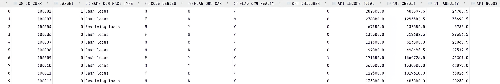
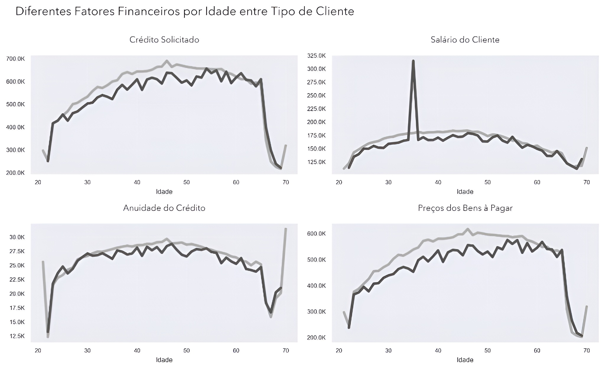
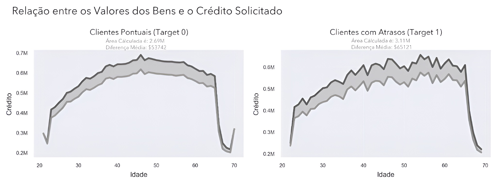

Parte 1
Contexto de negócio
Uma instituição financeira chamada Home Credit Group está tendo problemas em identificar quando seus clientes terão dificuldades para realizar o pagamento dos créditos solicitados.
Como estão passando por problemas financeiros, querem garantir que só fornecerão crédito àqueles clientes que puderem pagar, evitando prejuízos.
Diante disso, buscaram o auxílio de um cientista de dados, com a intenção de desenvolver um modelo de Machine Learning capaz de prever a probabilidade de um cliente ter problemas, baseado em informações como gênero, número de parentes, salário e pertences. Além disso, solicitaram uma análise dos dados para extrair insights sobre o perfil dos clientes e seus padrões de comportamento.

Parte 1 · Continuação
Requisitos e metodologia
Durante a conversa entre o cientista e a empresa, foi perguntado quais eram as principais informações que eles gostariam de obter. Em resposta, a empresa definiu um conjunto de perguntas estratégicas essenciais para orientar as análises:
- Qual é o perfil dos clientes que solicitam crédito? E dos que se atrasam?
- Fatores naturais como idade podem sinalizar riscos de atraso?
- O tipo de emprego é um indicativo? E sua escolaridade?
- Estado civil e número de dependentes impactam a necessidade de crédito?
- Os pertences comunicados ao banco servem como garantia?
- Como é a situação financeira dos clientes que atrasam?
- Clientes com salários altos têm menos dificuldade?
- Quem solicita mais do que precisa encontra mais dificuldade?
- Existem contratos com maior taxa de atrasos?
Além das perguntas, a empresa solicitou o treinamento de um modelo para prever atrasos, um relatório sobre seu potencial impacto financeiro e a identificação dos fatores que mais indicam um possível atraso.
- Desenvolver um modelo capaz de prever clientes atrasando.
- Identificar as características que evidenciam um atraso.
- Explicar os benefícios financeiros do novo modelo.
O Home Credit já possuía um Random Forest Classifier com AUC de aproximadamente 0,71. Embora o valor não parecesse ruim, ele era praticamente incapaz de acertar quando os clientes atrasavam, que era o principal problema que o projeto buscou superar.
CRISP-DM
Neste projeto, adotei uma das metodologias mais conhecidas para a resolução de problemas de dados: a CRISP-DM, que em tradução livre significa “Processo Padrão Transversal para Mineração de Dados”.
Trata-se de um método iterativo que permite ao cientista de dados ir e voltar entre as etapas, como Modelagem e Preparação dos Dados. Essa flexibilidade é útil, pois alguns insights surgem em diferentes fases do processo.
Dicionário de dados
O dataset inclui informações de localização, idade, estado civil e empregabilidade, além de relações financeiras, sociais e temporais. Como são mais de 120 colunas, o dicionário abaixo apresenta apenas as principais usadas na análise.
Abrir as principais variáveis
- SK_ID_CURR
- Identificador único do cliente.
- TARGET
- Indicador de inadimplência: 1 para inadimplente.
- NAME_CONTRACT_TYPE
- Tipo de contrato de crédito.
- CODE_GENDER
- Gênero do cliente.
- FLAG_OWN_CAR
- Indica se o cliente possui carro.
- FLAG_OWN_REALTY
- Indica se possui imóvel.
- CNT_CHILDREN
- Número de filhos.
- AMT_INCOME_TOTAL
- Renda anual total.
- AMT_CREDIT
- Valor total do crédito concedido.
- AMT_ANNUITY
- Valor anual de pagamento do crédito.
- AMT_GOODS_PRICE
- Preço dos bens financiados.
- NAME_INCOME_TYPE
- Tipo de fonte de renda.
- NAME_EDUCATION_TYPE
- Nível educacional.
- NAME_FAMILY_STATUS
- Estado civil.
- NAME_HOUSING_TYPE
- Tipo de moradia.
- DAYS_BIRTH
- Idade em dias, representada como valor negativo.
- DAYS_EMPLOYED
- Tempo de emprego em dias.
- OCCUPATION_TYPE
- Tipo de ocupação.
- CNT_FAM_MEMBERS
- Número de membros da família.
- EXT_SOURCE_1
- Pontuação de fonte externa sobre risco de crédito.
Parte 2
Análise exploratória de dados
Nesta etapa, buscamos responder às perguntas solicitadas e identificar novas correlações que a empresa poderia não ter considerado, usando Python, Matplotlib e Seaborn.
Idade traz mais responsabilidade?
É um senso comum que pessoas mais velhas tendem a ser mais responsáveis, mas era necessário conferir essa informação. Para isso, criei histogramas que contam quantas pessoas em diferentes idades atrasam ou não o pagamento.
Entre os clientes que não costumam atrasar, a idade parece bem distribuída. No gráfico dos clientes que atrasam, é possível observar uma queda conforme a idade aumenta. Isso pode indicar que clientes mais velhos são mais confiáveis para obter crédito.

Fatores financeiros ao longo da idade
Nos gráficos, a linha preta representa clientes que não atrasam e a cinza representa os que atrasam. Em geral, os clientes que atrasam solicitam mais crédito e possuem bens mais caros a pagar.
Embora o salário seja parecido, os clientes que atrasam costumam solicitar mais dinheiro e financiar bens mais caros. O problema atinge seu pico por volta dos 50 anos. Os clientes mais jovens solicitam menos dinheiro, mas atrasam com maior frequência.

A discrepância entre clientes pontuais e os que atrasam fica evidente: em média, quem atrasa solicita 11.379 a mais em crédito, um possível indicativo de solicitação excessiva.

Clientes jovens atrasam mais, mas devem menos; clientes mais velhos atrasam menos, mas, quando atrasam, devem mais dinheiro.
- Clientes mais jovens têm maior chance de atraso.
- Clientes mais velhos pedem mais crédito e financiam bens mais caros.
- Há mais casos extremos de endividamento entre os clientes que atrasam.
- Os 50 anos parecem formar um ponto crítico nos valores solicitados.
Perfil ocupacional e familiar
A grande maioria dos clientes não possui educação superior, mas percebemos maior pontualidade entre os que possuem. Clientes com cargos mais elevados, como Core Staff ou High Skill Tech Staff, também aparentam ser mais pontuais.
A maioria das solicitações está relacionada a eletrônicos. As solicitações mais caras, para veículos, medicina e turismo, são quase inexistentes ou negadas, reforçando a leitura de uma base majoritariamente de baixa e média renda.
Nos fatores familiares, há poucas diferenças entre clientes pontuais e atrasados. A maioria é solteira, mora com poucas pessoas e geralmente não possui filhos. Existe um pequeno aumento na taxa de atraso conforme o número de filhos cresce, mas a porcentagem é baixa.
Parte 3
Modelagem preditiva com Python
1. Preparação e limpeza
No dataset existiam informações inúteis, informações que poderiam ser agregadas, valores faltantes e outliers potencialmente ruins para o modelo. O primeiro passo foi remover colunas irrelevantes e combinar determinadas variáveis por meio de médias, reduzindo a dimensionalidade sem perder informação significativa.
Criei funções para localizar e visualizar valores faltantes. Colunas com mais de 60% de ausência foram removidas. Nas demais, valores numéricos foram preenchidos com a média e variáveis de texto com a moda.
Depois, removi outliers de colunas específicas e codifiquei as variáveis categóricas. Colunas binárias viraram zeros e uns, e o grau escolar foi transformado com OrdinalEncoder.
2. Modelo de Machine Learning
Comecei selecionando as variáveis de treinamento e a variável de previsão. Apliquei uma técnica de undersampling chamada NearMiss, porque existiam menos pessoas atrasando do que pagando em dia, e depois padronizei os dados com StandardScaler.
Em seguida, defini os hiperparâmetros do LightGBM usando o método DART para melhorar a regularização e evitar overfitting. Ajustei a taxa de aprendizado, o número de folhas e a fração de features usadas em cada iteração.
Para lidar com o desbalanceamento, apliquei
scale_pos_weight, dando mais peso à classe minoritária.
O treinamento utilizou validação cruzada estratificada com cinco
folds e monitoramento da AUC por até 600 iterações.
Resultados
Separar melhor os clientes que atrasam
Como os dados estavam desbalanceados, a troca entre precision e recall era muito custosa. Por isso, o foco principal foi AUC-ROC, métrica que avalia quão bem o modelo separa as classes. Uma AUC de 0,5 equivale a um modelo aleatório; quanto mais próximo de 1, melhor.
O resultado de 0,764 significa que o modelo tem 76,4% de chance de classificar corretamente um cliente que atrasará o pagamento quando comparado a um cliente que não atrasará.
Embora o modelo antigo apresentasse uma taxa de acerto geral ligeiramente superior, o novo se destacou na identificação de inadimplentes. Em uma amostra, o modelo antigo identificou corretamente apenas quatro clientes, enquanto o novo acertou 222.
Foram 218 clientes adicionais com risco identificado. No cálculo apresentado no projeto, isso representa mais de ¥21,88 milhões em perdas potenciais detectadas em um escopo de 30.752 previsões.
Considerando que cada cliente inadimplente solicita em média ¥557.778 em crédito e atrasa o pagamento por quatro meses, o banco pode ter prejuízo médio de até ¥100.400 por caso. Os valores são uma estimativa de impacto do cenário analisado, não uma garantia de retorno financeiro.
Texto migrado e reorganizado a partir do estudo original no Wix.